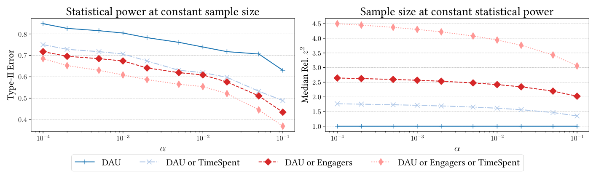

Powerful A/B-Testing Metrics and Where to Find Them (强力 A/B 测试指标何处寻)
- 会议/期刊: RecSys 2024（Industry Track）
- 作者与机构: Olivier Jeunen、Shubham Baweja、Neeti Pokharna、Aleksei Ustimenko —— ShareChat（印度短视频平台）
- 推荐链路定位: 线上评测 / 实验平台（系统级端到端决策）
- 研究方向: 去偏公平、可信隐私与工业架构（线上评价指标体系）
- 论文原文: https://arxiv.org/abs/2407.20665v1
- 开源代码: 暂未开源
TL;DR (1分钟核心速览)
推荐系统的 A/B 测试长期受制于「单一北极星指标灵敏度不足、大量实验落为假阴性」这一工业痛点，而数十个代理指标孰优孰劣全凭经验。本文把平台积累的历史实验本身当作标注数据，按「已知结局 / 未知结局 / A-A 同源」三类打标，构建离线管线逐指标量化 I 类（假阳）、II 类（假阴）、III 类（符号）错误与统计功效分布；在 ShareChat 与 Moj 数百个历史实验上证明，联合 \(\{\)DAU, Engagers, TimeSpent\(\}\) 三个代理指标并在 Bonferroni 校正下决策，可在 95% 置信水平将 II 类错误相对降低 35%，或将达成同等功效所需的样本量缩小 ×3.5。
Background & Motivation (背景与核心矛盾)
- 主流范式: 以北极星指标（长期增长/营收）做因果判定，其余 DAU、TimeSpent 等指标仅作"支撑性证据"；已有研究大多聚焦于降低效应估计方差（CUPED、序贯检验等）来提高实验速度。
- 前人局限之一（灵敏度）: 绝大多数实验无法使北极星指标显著移动，本质是指标方差大而效应小；只盯一个指标等于主动放弃统计功效。
- 前人局限之二（可解读性）: 结果常自相矛盾——"会话数变少但更长、播放变多但互动变少、跳过增多但分享也增多"，单指标无法给出该实验算成功还是失败的判据。
- 核心洞察 (Key Insight): 平台同时跑几十个实验，累积下来是一份关于"干预—响应"的天然标注集。指标的评价对象不是用户而是指标自身，因此可以离线复用历史实验来给指标做"元评估"（type-I/II/III 错误率与 power 分布）。
- 本文切入点: 不做新指标学习，而做既有指标的校验管线（validation pipeline）——把历史实验的已知结论当作金标准，反向度量每个候选指标在决策中的可信度。
Method (核心方法设计)
1. 整体框架 (Overall Architecture)
管线分四步：① 从平台自然实验流中采集历史 A/B 实验对 \((A,B)_i\)；② 人工复现与核实，把实验判分为已知结局\(\mathcal{E}_+\)（\(A\succ B\)，北极星或护栏指标显著改善且已被复验）、未知结局\(\mathcal{E}_?\)（\(A\,?\,B\)，北极星不显著）、A/A 同源\(\mathcal{E}_{\simeq}\)（\(A\simeq B\)，零假设按构造成立，通过合成采样获得）；③ 对每个候选指标\(m\)计算每个实验的\(z\)分数，进而统计 I/II/III 类错误率与\(z\) 分布；④ 依据功效筛选指标集，在多重检验校正下用「任一指标显著即判正」的规则做联合决策。整个流程纯离线，不侵入线上分流。
flowchart TD
A["历史 A/B 实验池 (ShareChat / Moj)"] --> B["人工复现与打标: E+ / E? / E≃"]
B --> C["逐指标计算 z-score"]
C --> D["统计 I/II/III 类错误 + 功效分布"]
D --> E["筛选高功效、无符号错误的指标集"]
E --> F["Bonferroni 校正下多指标联合判定"]2. 关键设计拆解 (Key Designs)
-
三类实验分域打标（把"没有金标准"变成"有金标准"）：A/B 指标评估最大的障碍是无 ground truth。本文的算子是分域定义：\(\mathcal{E}_+\)只收录效应量级足够大的系统改动（如新模型架构上线）并经复验确认，\(\mathcal{E}_?\)中被归为"真假阴性"的实验同样要求改动幅度达标，\(\mathcal{E}_{\simeq}\) 由合成 A/A 采样补足——这样三类错误率才互不污染。直觉上，这相当于给每个指标构造了三个"(正样本, 负样本, 零样本)"池子，把假设检验问题还原成了分类错误率统计。
-
以 \(z\)分数为统一度量，同时导出三类错误与功效：对指标\(m\)与实验对\((A,B)\)，定义
其中 \(\mu\)、\(\sigma\)分别为样本均值与均值方差。\(\Phi^{-1}\)为标准正态分位函数，\(\Phi^{-1}(1-\alpha/2)\) 即双侧临界值。三类错误据此定义：
关键在 \(\varepsilon_{III}\)：它是符号错误，即指标方向与金标准相反——这类错误比假阴性更致命，因为它会让平台朝错误方向迭代。本文据此把候选集先做一次硬过滤：只保留在全部历史实验中从未与北极星冲突的指标（DAU、Engagers、TimeSpent 三者均通过该检验）。
- 功效—样本量换算与 Bonferroni 联合决策：统计功效即 \(1-\varepsilon_{II}\)；在固定功效下所需样本量与\(z^2\)成反比，故作者用中位相对\(z^2\)（相对单指标 DAU 的倍数）直接换算样本量缩减倍数，把"指标更好"翻译成平台能理解的"实验更便宜"。多指标联合时采用并集判定，并用 Bonferroni 校正把每指标的显著性阈值收紧为\(\alpha/|\mathcal{M}|\)，从而把并集带来的 I 类错误膨胀压回名义水平。这一设计无需训练、无需负采样，计算复杂度仅为\(O(|\mathcal{E}|\cdot|\mathcal{M}|)\) 的一次性扫描。
Experimental Setup & Evaluation Protocol (实验设置与评估协议)
- 数据集与预处理: 完全来自 ShareChat 与 Moj 两个大规模短视频平台的真实历史实验，非公开学术数据集，无可复现的公开划分。
| 平台 | 实验池规模 | \(\mathcal{E}_{+}\)（已知结局） | \(\mathcal{E}_{?}\)（未知结局） | \(\mathcal{E}_{\simeq}\)（A/A） | 场景说明 |
|---|---|---|---|---|---|
| ShareChat | 数百个历史实验 | 人工复验后确认 | 北极星不显著、改动幅度达标 | 合成采样 | 短视频社区 + 社交 |
| Moj | 同量级历史实验 | 人工复验后确认 | 同上 | 合成采样 | 短视频消费 |
- 数据划分与防穿越 (Splitting Strategy): 无传统 train/test 划分，采用实验级留出——历史实验整体作为评估语料，\(\mathcal{E}_+\) 的金标准标签由人工复现与复验确认，A/A 池独立合成，避免同一实验既当"训练"又当"验证"。
- 排名评测协议 (Ranking Protocol): 不适用（非排序任务）；核心协议是双侧 \(z\)检验，\(\alpha\)从\(10^{-4}\)扫到\(10^{-1}\)，主结论取\(\alpha=0.05\)（95% 置信）；多指标场景施加 Bonferroni 校正。
- 对比基线与超参设置: 基线为不同指标集而非模型——\(\{\)DAU\(\}\)为锚点，逐步加入 TimeSpent、Engagers 构成并集方案；核心指标为 II 类错误率与中位相对\(z^2\)。
Key Experimental Results (实验关键数据)
1. 主实验对比 (Main Results)
| 决策用指标集 \(\mathcal{M}\) | II 类错误 @\(\alpha=0.05\) | 相对 DAU 降幅 Improv. |
中位相对\(z^2\) | 等效样本量 |
|---|---|---|---|---|
| \(\{\)DAU\(\}\)（锚点） | ≈0.69 | — | 1.0× | 1.0× |
| \(\{\)DAU, TimeSpent\(\}\) | ≈0.60 | ≈13% | ≈2.0× | ≈2.0× 缩减 |
| \(\{\)DAU, Engagers\(\}\) | ≈0.55 | ≈20% | ≈2.5× | ≈2.5× 缩减 |
| \(\{\)DAU, Engagers, TimeSpent\(\}\) | ≈0.45 | 35% | ≈3.5× | ×3.5 缩减 |
（注：锚点 35% 相对降幅与 ×3.5 样本量缩减为原文明确给出的结论；中间两行的数值为图 1 曲线读图估值，趋势单调。）

2. 消融实验 (Ablation Study)
| 配置 | 关键变化 | 结论 |
|---|---|---|
| w/o 多指标并集（仅 DAU） | 功效最低、II 类错误最高 | 单指标是功效瓶颈的根源 |
| + TimeSpent 单加 | II 类错误下降、样本量约减半 | 时长指标对"少而长会话"型干预最敏感 |
| + Engagers 单加 | 降幅大于 TimeSpent | 互动人数比时长更贴近北极星 |
| w/o Bonferroni 校正 | I 类错误超出名义 \(\alpha\) | 并集必须配多重检验校正，否则假阳失控 |
| w/o \(\varepsilon_{III}\) 预过滤 | 引入方向错误指标 | 符号错误的代价高于假阴性，必须先硬过滤 |
3. 关键实验发现 (Key Findings)
- 多指标并集是"免费的功效"：在 \(\alpha=0.05\)下把\(\{\)DAU, Engagers, TimeSpent\(\}\) 并起来，II 类错误由 ≈0.69 降至 ≈0.45，相对降 35%——意味着原本被误判为"无效果"的三分之一以上实验能被正确识别，直接提升平台的实验吞吐。
- 同一结论的等价经济含义是实验成本下降 3.5 倍：中位相对 \(z^2\) 达 ≈3.5×，即达到与单 DAU 相同功效所需样本量可缩至约 1/3.5，对流量有限的中腰部平台而言，这比"提升指标"更具直接商业价值。
- 指标选择必须过"符号关"：三个入选指标在全部历史实验中与北极星零符号冲突（\(\varepsilon_{III}=0\)）。这说明筛选代理指标的正确顺序是「先保方向正确，再谈统计功效」——高功效但偶发反向的指标在工业决策中不可用。
Highlights & Limitations (亮点、对比与审稿批判)
- 与代表作对比 (vs. Prior Work): 与 Jeunen & Ustimenko 一脉的"从历史实验学习新指标"不同，本文反过来校验既有指标，产出的是可审计的错误率与功效画像而非黑箱指标；相较 proxy metric 与长期北极星对齐的研究（短期代理需长期验证），本文完全绕开长期追踪，用已有实验标签即可离线完成评估，落地代价低一个数量级。
- 可迁移亮点: ①「\(z^2\) 中位相对倍数 ↔ 样本量缩减倍数」的换算方式，可直接用于任何平台的指标准入评审；②「I/II/III 类错误分域定义」这套模板可平移到离线评测（用 Full-Ranking 结果反过来校准离线指标的信噪比）。
- 审稿级局限批判: ① 实验范围仅限 ShareChat/Moj 两个短视频平台，\(\mathcal{E}_{+}\)由人工复验与主观判定产生，存在选择偏差与标注者偏差，跨域（电商、长视频）外推性未知；② Bonferroni 过于保守，在指标相关性高时会低估真实功效，Holm 或 BH 等更紧的校正可能带来更大收益，文中未做对比；③\(\mathcal{E}_{?}\) 的入选依赖"改动幅度足够大"这一人工阈值，阈值松紧会显著改变 II 类错误估计，敏感性分析缺失。
Rating (四维评分)
- 方法创新性 (Novelty): ⭐⭐⭐⭐ （把历史实验当标注集的"元评估"视角务实且少见，但统计工具本身是经典假设检验的直接组合，无新理论）
- 评估协议与实验扎实度 (Protocol & Experiments): ⭐⭐⭐⭐ （数百个真实工业实验 + 三类错误分域 + A/A 合成对照，远超一般论文的玩具评测；扣分在人工标注的可复现性与 \(\mathcal{E}_?\) 阈值的敏感性缺失）
- 写作与数学规范度 (Clarity & Rigor): ⭐⭐⭐⭐⭐ （三类错误的公式定义干净利落、符号自洽，\(z^2\) 与样本量的换算链条清晰，工业论文中少见的严谨）
- 工业落地与复现价值 (Industrial & Practical Value): ⭐⭐⭐⭐ （纯离线管线、无模型训练，任何有实验平台的公司可直接复刻；扣分在数据与代码均未开源、结论强依赖平台自身历史实验存量）